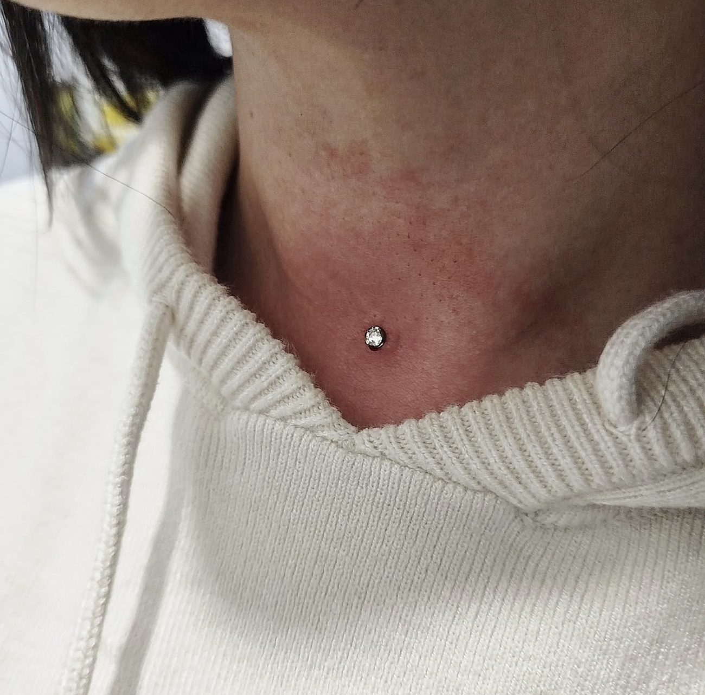

Piercing profesional con titanio grado implante y seguimiento.
Utilizamos titanio de grado implante ASTM-F136, rosca interna y acompañamiento durante cicatrización.
| Zona | Cicatrización |
|---|---|
| Lóbulo | 2-3 meses |
| Helix / Flat | 8-12 meses |
| Lengua | 2-3 meses |
| Tragus / Conch | 8-12 meses |
| Labio | 3-4 meses |
| Septum | 3-4 meses |
| Nariz | 8-12 meses |
| Ombligo | 6-12 meses |
| Industrial | 10-12 meses |


